ground rules as usual i.e.
- everyone already passed
- ... that's it
AGENDA:
(basically a HUGE WIP)
- what is GIT
- why / benefits
- installing git
- getting code from remote source
- working with it
...BUT FIRST
...SYLLABUS

the problem
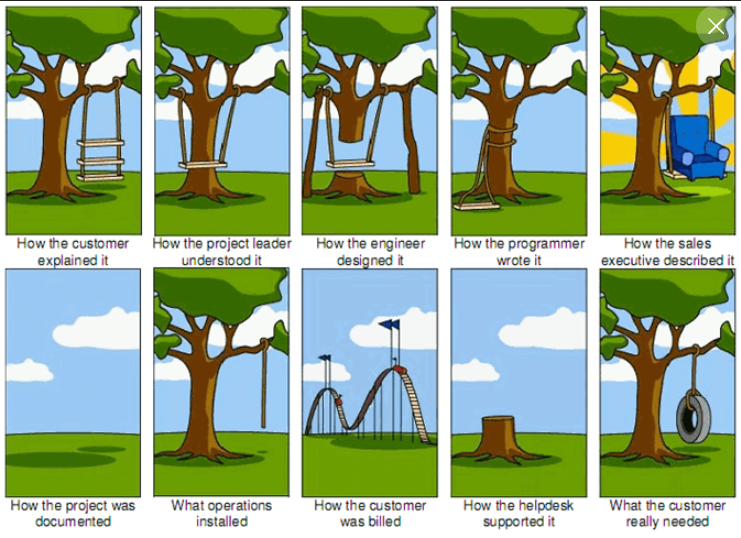down to earth AGILE approach:
How to track bugs?
How to track bugs?
AIM: business trusts we deliver (e.g. the same SP amount each sprint)
- AIM: transparency
- AIM: collaboration
- AIM: communication
agile intro
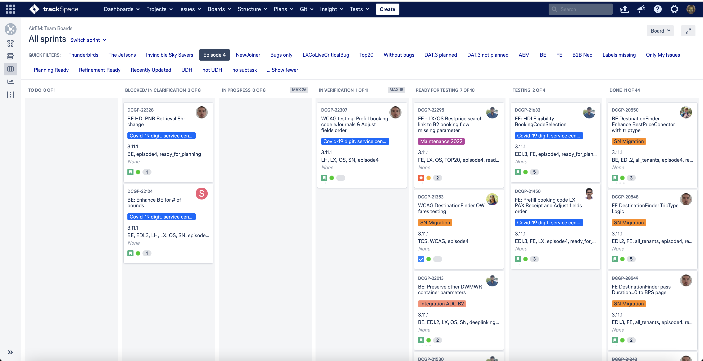basic links:
(kanban anyone?)
epic -> feature -> story
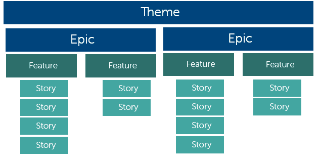scrum events
- daily standup
- sprint planning
- sprint refinement
- sprint review / demo
- sprint retro
- demo dry-run
- demo dry-run prep
- tech planning / refinement
- feature refinement
- backlog refinement
- solutioning
SP, capacity, velocity, burndown
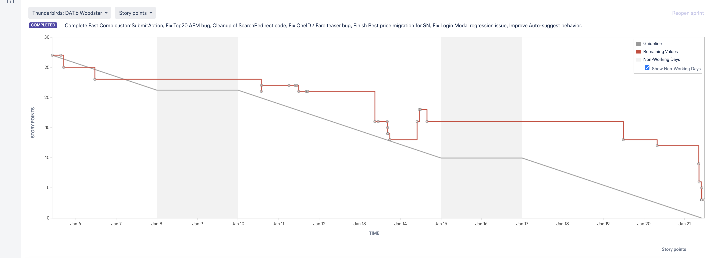 planit pokerAIM: to cut down items to the smallest possible
PR, CR
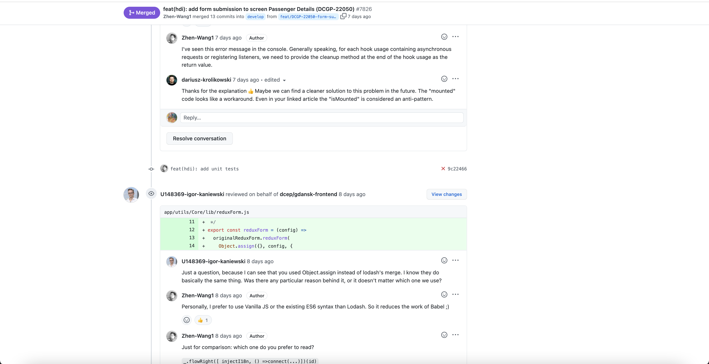git signal words
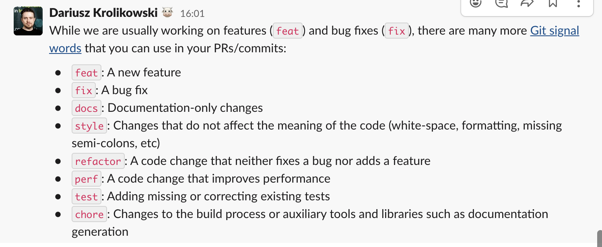semantic releases in DevOps
semantic releasesazure devops (pipelines?)
DEV team:
- Scrum master
- Product owner (!PM)
- BA (business analyst)
- DA (data analyst)
- testers (tester != QA)
- designers (UX != UI)
- developers (FE, BE etc)
one role must not have the responsibilities of more than one role
Wait, where's devops?
CoP
UX/UI explained
 UX vs UI
UX vs UI
agile pathologies
- PO not being PO
- SM not being SM
- lazy devs (burndown chart should expose it)
- lack of proper refinements
- timebound SP
- self organized means 'we can do everything' (agile = chaos?)
- over / under commitment (can you please one take more)
agile pathologies
- noise (meetings / syncs with no time to code)
holy grail
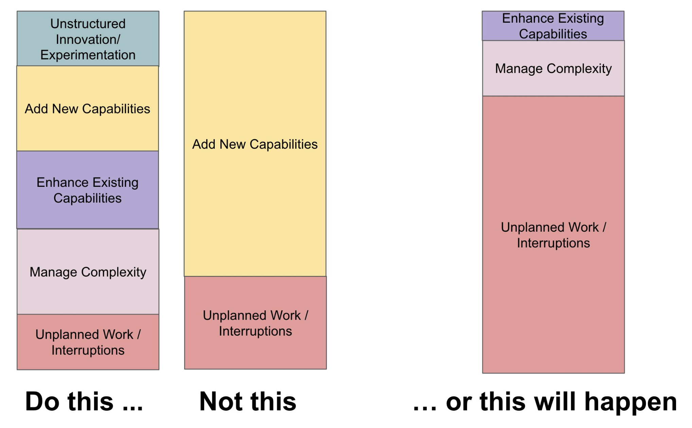Q: What is GIT?
A1: distributed version control system (VCS)
A2: a standard
is github a git?
NO
there are many gitflows / git servers available (gitlab, bitbucket)
we can also have our own & local implementation of GIT server (gerrit, gitolite, gogs)

installing:
- macOS:
git - linux:
(read: your favourite package manager)sudo apt install git-all - win:
(https://git-scm.com/download/win)choco install git
3 entry points
- get existing remote repo
- create new repo locally
- create new repo on the remote
getting the code from 'THE INTERNET'
git clone [address]creating new repo locally
git init if project was created using a framework, GIT project is already initialized (like in 99% of all cases)
creating new repo on remote means to click 'create new repo' on eg. github page and then 'following the rabbit'
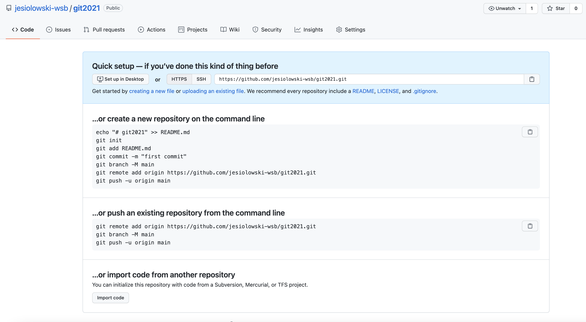TASK:
create and empty repository with folder structure like:
[root dir]
assets
css
\--index.css
js
\--index.js
index.html
.git directory got created
states
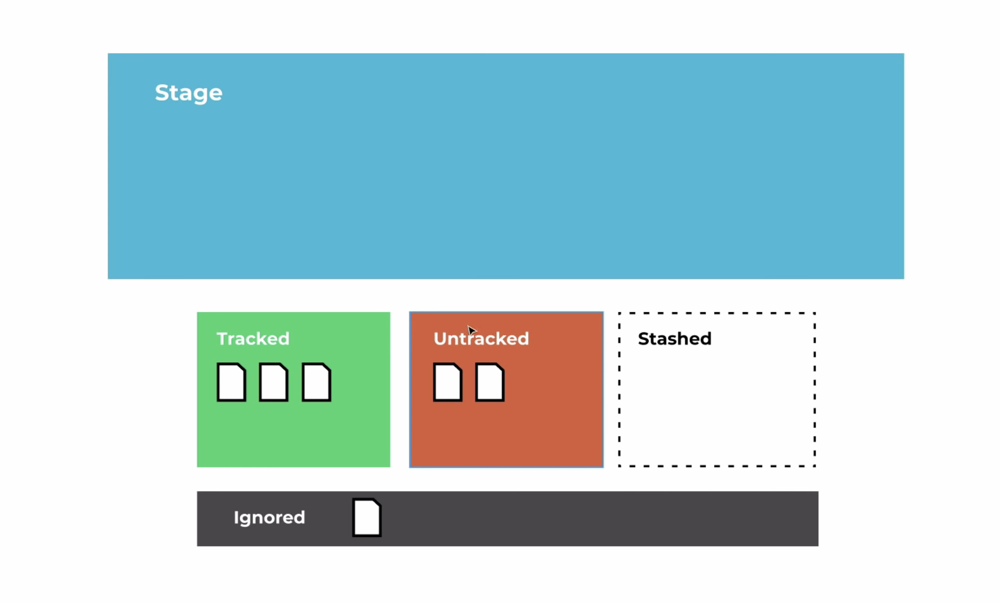git statusgit add index.html
git status
#[modify the file]
git statusgit add .
git statuscommit
captures a snapshot of the project's currently staged changes. 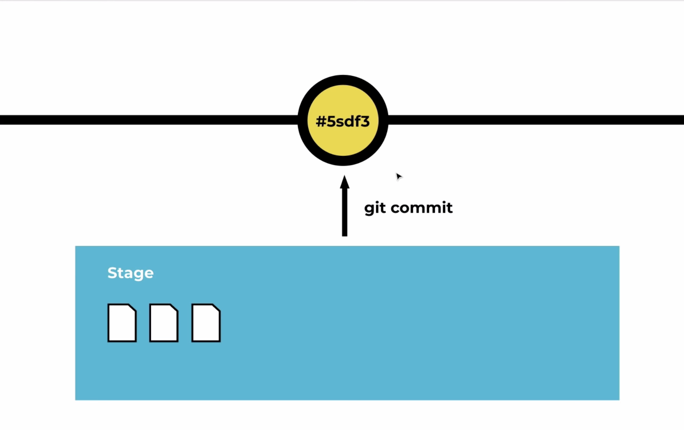git commit
git config --global core.editor nanogit config --listgit logadding SSH key to github
// for example:
// git remote add origin git@github.com:jesiolowski-wsb/git_wsb.git
git remote add origin [your path]
git branch -M main // <-- optional (git branch --help)
git push -u origin main '-u origin master' means set UPSTREAM reflecting local 'main' on origin (remote)
note: please use SSH for access - HTTPS should serve as a last resort option
WSB quirks
git config user.name "John Doe"
git config user.email "john@doe.org"
// vs
git config --global user.name "John Doe"
git config --global user.email "john@doe.org"
// multiple SSH keys env:
git config core.sshcommand "ssh -i ~/.ssh/id_ed25519 -F /dev/null"
// after modifying a file
git add .
git commit //optionally: -m "..."
git push
// commits all staged files
git commit -am "commit message"
git push
recap:
git initinitializes a repo
git clonegets a repo from a repote resource cloning it locally
git configlists/sets config elements of a repo / globally
git add
git commit
git push- adds a file(s) to staging area,
- adds it to commit,
- pushes to the remote
// pro-tip: only on local feature branches
git commit --amend GIT checkout
viewing an old revision (changing the branch)
git log // git log --oneline
git checkout [name]
// git checkout -
//example:
git log --oneline
git checkout a1e8fb5
...
git checkout main
// creates a checkout from a starting point if branch not exist
git checkout -b < branch_name>
// resets branch to the starting point
git checkout -B < branch_name>
GIT stash
temporarily shelves (or stashes) changes you've made to your working copy so you can work on something else, and then come back and re-apply them later on[modify a file]
git stash // will put changes to the stash
// alternatively
git stash -u // adds also untracked files
git stash pop // pops the change out of shash
git stash apply // takes the changes from the stash leaving the stash
git stash list
git stash save "descriptive label"
// git stash pop takes the most recent stash.
// if you want to take the older one
git stash pop stash@{2}
// single entry
git stash drop stash@{1}
// whole stash
git stash clear TASK:
- modify index.css adding text color to everything
- add the changes to the stash
- read out from the stash using pop / apply
- add the changes to the stash once more but with a message
- get the stash again by its ID
- clear the stash completely
- commit the changes
git status
displays the state of the working directory and the staging area.git statusgit log
displays committed snapshots. It lets you list the project history, filter it, and search for specific changes.git loggit log -n < limit> //how many commmits
git log --oneline // short output
git log --stat // statistict about insertions / deletions
git log -p // most detailed view
git log --author="< pattern>" // search for author - regex works
git log --grep="< pattern>" // search in commit messages
git log --author="John Smith" -n3 -p hello.pygit log -p -n1GIT blame
display of author metadata attached to specific committed lines in a filegit clone https://kevzettler@bitbucket.org/kevzettler/git-blame-example.git && cd git-blame-examplegit loggit blame README.md // blame MUST have a parametergit blame -L 1,5 README.md //line range
git blame -e README.md //email address instead of username
git blame -w README.md //ignores whitespaces
collaborating
basic big picture
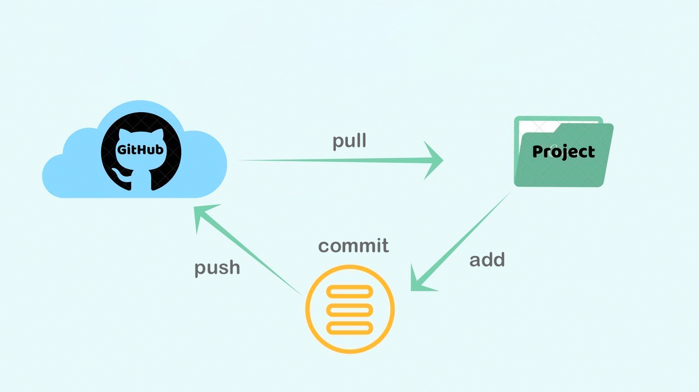TASK
- work in pairs
- Person A: create a repo, share the URL with Person B
- person B: get the repo and try to push change to it (remember the order - first commit, then push)
- solve the problem by working together :D
- switch roles (Person A <===> Person B)
big picture with others
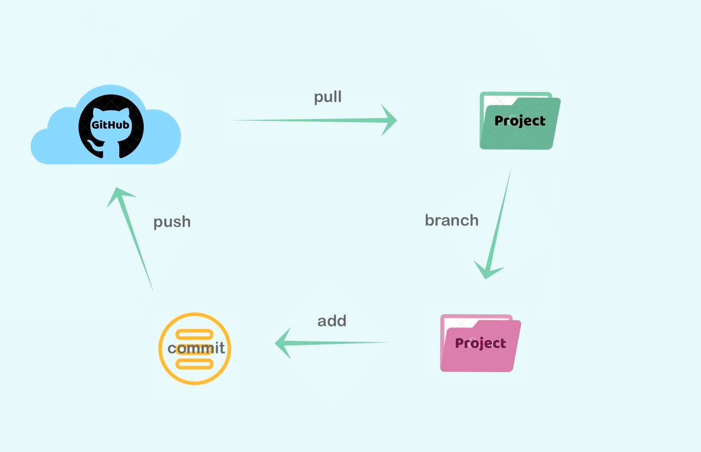git remote
lets you create, view, and delete connections to other repositories. Remote connections are more like bookmarks rather than direct links into other repositories. Instead of providing real-time access to another repository, they serve as convenient names that can be used to reference a not-so-convenient URL.
git remote // lists all the remotes
git remote -v // lists all the remotes with their URLs
git remote add < name> < url>
git remote rm < name>
git remote rename < old-name> < new-name>
see the reasoning now?
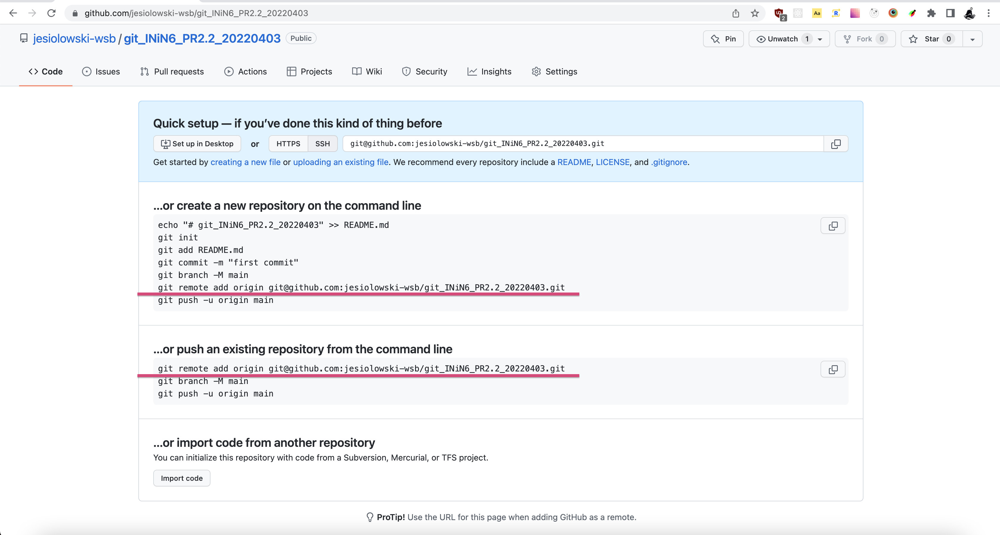
- add new remote to your repository
- show remote list
- remove dummy remote
git fetch
downloads commits, files, and refs from a remote repository into your local repo// gets all branches (+ commmit & files) from EXPLICITLY stated upstream
git fetch < remote>
// same as above, but only for one branch
git fetch < remote> < branch>
// fetches all registered remotes and their branches
git fetch --all
git FETCH - the 'safe' version
git PULL - more aggressive alternative
PULL will download the remote content for the active local branch and immediately execute git merge to create a merge commit for the new remote content.
If you have pending changes in progress this will cause conflicts and kick-off the merge conflict resolution flow.
If you have pending changes in progress this will cause conflicts and kick-off the merge conflict resolution flow.
example
git fetch origin
// optional - check what was changed
git checkout main
git log origin/main
// merge to local main
git merge origin/main
git pull
used to fetch and download content from a remote repository and immediately update the local repository to match that content.common options
// the same as git fetch & git merge origin/< current-branch>
git pull < remote>
// the same as git fetch
git pull --no-commit < remote>
// fetch + different strategy for merge i.e. 'rebase'
git pull --rebase < remote> The former keeps it, the latter does not.
git commit
// basic commit (unacceptable since no commit mesage)
git commit
// commit with a message
git commit -m ""
// adding new commit to the previous one (it is changing the hash)
commit --amend
// if a commit was a mistake
// creates another commit that reverts the changes
git revert < commitId >
// doing real 'undo' on a commit
// numeric value indicates how many commits should be undone
git reset HEAD~1
TASK
create a commit (or two) and:
- revert it
- undo (reset) it
(note: using git visualiser might be more apparent for what's happening)
git push
used to upload local repository content to a remote repositoryPushing is how you transfer commits from your local repository to a remote repo
// remote == upstream (defaults to origin),
// branch defaults to current branch
git push < remote> < branch>
// push all local branches
git push < remote> --all
// default git push
git checkout main
git fetch origin main
git rebase -i origin/main
// Squash commits, fix up commit messages etc.
git push origin main
// Amended force push
// make changes to a repo and git add
git commit --amend
// update the existing commit message
git push --force origin main
// deleting remote branch
git branch -D branch_name
git push origin :branch_name
- clone a repo git_exercises from https://github.com/jesiolowski-wsb/git_exercises using SSH
- add a file [my_name].txt to the repo
- sync your local repo with the remote
what is required to achieve this goal?
git clone git@github.com:jesiolowski-wsb/git_exercises.git
echo "test txt file" > file1.txt
git add file1.txt
git commit -m "file added"
git push
git pull
branching
effectively a pointer to a snapshot of your changes. When you want to add a new feature or fix a bug—no matter how big or how small—you spawn a new branch to encapsulate your changes// synonyme to git branch --list
git branch
// creates without checkout
git branch < branchName >
// safe remove
git branch -d < branchName >
// forced remove
git branch -D < branchName >
// rename a branch
git branch -m < branchName >
// lists all remote branches
git branch -a
// removing remote branch
git push origin --delete < branchName >
git push origin :< branchName >pull request
lets you tell others about changes you've pushed to a branch in a repository (...) you can discuss and review the potential changes with collaborators and add follow-up commits before your changes are merged into the base branch (docs)create a local branch with 1 image inside, push it to remote
git branch fj_test // alternative: git checkout -b fj_test
git checkout fj_test
echo "file_test" >file.test.txt
git add .
git commit -am "test on a branch"
git push // should result with an error, why?
git push --set-upstream origin fj_test
git push TASK:
work in pairs
- Person A: get to the repo of Person B, create a local branch, put a change to it and push to the remote. Ideally, you should create a remote branch on Person's B repo.
- Ask for a code review creating a pull request (github.com level)
- switch roles
task
do the same as before (branch, commit and push), but using an IDE of your choiceGIT MERGE
lets you take the independent lines of development created by git branch and integrate them into a single branch.// Start a new feature
git checkout -b new-feature
// Edit some files
git add < file>
git commit -m "Start a feature"
// Edit some files
git add < file>
git commit -m "Finish a feature"
// Merge in the new-feature branch
git checkout main
git merge new-feature
git branch -d new-feature
git merge fj_test
git push
git branch -d fj_test
resolving conflicts
If the two branches you're trying to merge both changed the same part of the same file, Git won't be able to figure out which version to use. When such a situation occurs, it stops right before the merge commit so that you can resolve the conflicts manually.- modify a file on your local repo
- modify the same file on a remote (github.com level) in a different manner
- try to commit & push file from a local machine
resolving conflicts
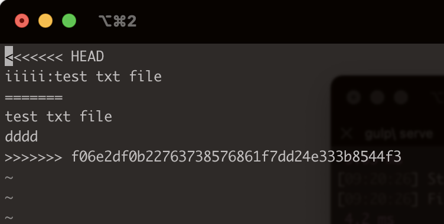the content before the ======= marker is the receiving branch and the part after is the merging branch.
When you're ready to finish the merge, all you have to do is run git add on the conflicted file(s) to tell Git they're resolved.
Then, you run a normal git commit to generate the merge commit
Then, you run a normal git commit to generate the merge commit
// helps to identify conflicted files
git status
// list of commits that conflict between the merging branches.
git log --merge
// find differences between states of a repository/files
// https://queirozf.com/entries/git-diff-reference-and-examples
git diff
// can be used for undoing changes to files, or for changing branches
git checkout
// reset can be used to undo changes to the working directory and staging area.
git reset --mixed
// will exit from the merge process and return the branch to the state before the merge began
git merge --abort
// resets conflicted files to a know good state
git reset
Exercise 1:
Please enter GIT visualizer and recreate the the most common pattern used while working on a project i.e.- prepare MASTER and DEVELOP branch
- while being on develop, create 'code import' commit (+ push to remote)
- create 3 feature branches, commit and push to remote
- merge all feature branches with develop
- make a pull from remote
- perform 'git tag release1'
- merge with master
- push to remote
Exercise 2:
- create a commit, then undo it using reset HEAD~1
- commit again, then revert last commit
- create a commit, then --amend it
- push
Exercise 3:
- while on develop, create a feature branch
- on this feature branch, create 3 commits
- go back to develop, create 2 commits
- go to feature branch again and perform git rebase develop
what just happened?
git rebase
Rebasing is the process of moving or combining a sequence of commits to a new base commit.
// Create a feature branch based off of main
git checkout -b feature_branch
// Edit files
git commit -a -m "Adds new feature"
//rebase happening
git rebase develop
//but we're still on a feature branch
git checkout develop
git merge feature_branch
git push
git branch -d feature_branch
git rebase -i
interactive way of editing past commits.// identify the last "good" commit and provide its hash to the rebase command:
git rebase -i 0ad14fa5
// mark all the commits you want to change with the "edit" keyword
// (Git will walk you through each commit)
git commit --amend --author="John Doe < john@doe.org>" --no-edit
git rebase --continue
git push
cherry picking
act of picking a commit from a branch and applying it to another
a - b - c - d Main
\
e - f - g Feature
Aim: to take commit f from feature branch and put it into Main
git checkout -b feature branch
// touch file1.txt
// git add .
// git commit -m "adding txt file"
// touch file2.jpg
// git add .
// git commit -m "adding jpg file"
git log --oneline
git checkout develop
git cherry pick // < commit hash of a desired commit> < or commits>
no instant commit
git cherry-pick < hash > -nResources
bonus:
git flowwhat is git flow
It's a wrapper around GIT. Needs separate installation. Is an extension to default git init and simply... creates brancheswhat is git flow II
a set of guidelines dev can follow when using version control.A branching model

initialization
mkdir gitflow
cd gitflow
git init
// shows help page
git flow
// initializes gitflow structure
git flow init
'feature' path
// check available branches
git branch
// shows help for a command
git flow feature help
// creates a feature
git flow feature start REV1
working with features
// list all branches
git branch
// bear in mind a difference in naming the branch vs feature list view
git flow feature list
// add new file
touch file1.txt
git add .
git commit -m "add txt file"
git log --oneline
differences in branches creation
// note what happened - new feature is based on DEVELOP
git flow feature start REV2
// lets add something to the feature
touch index.php
git add .
git commit -m "adding php script"
git status
git log --oneline
finishing feature
//check if state is clean
git checkout develop
git checkout feature/REV1
// merge feature to develop and then remove feature branch
// read 'summary of actions' section
git flow feature finish
git branch
git flow feature list
// nothing mentioned about the 'merge'
git log
finishing feature II
git checkout feature/REV2
// real merging is taking place
git flow feature finish
git status
// git log --oneline
git log --oneline --graph